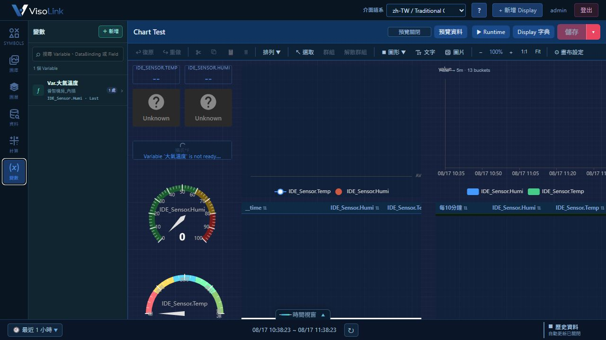
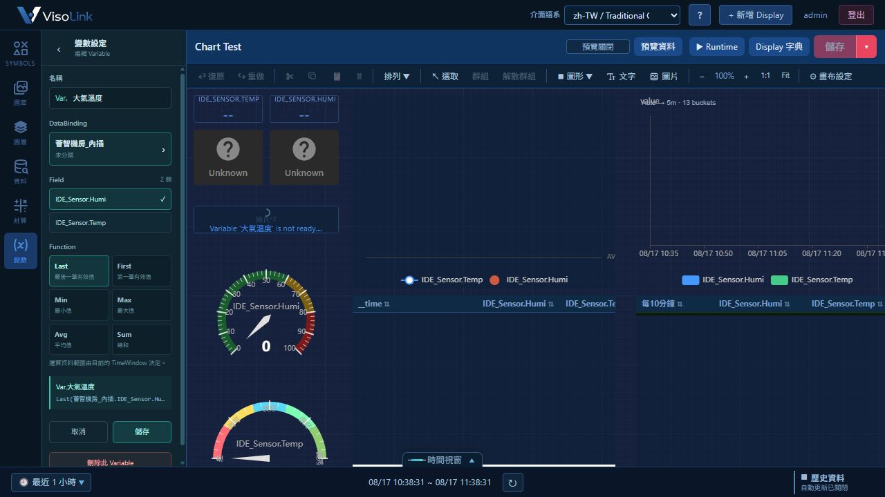
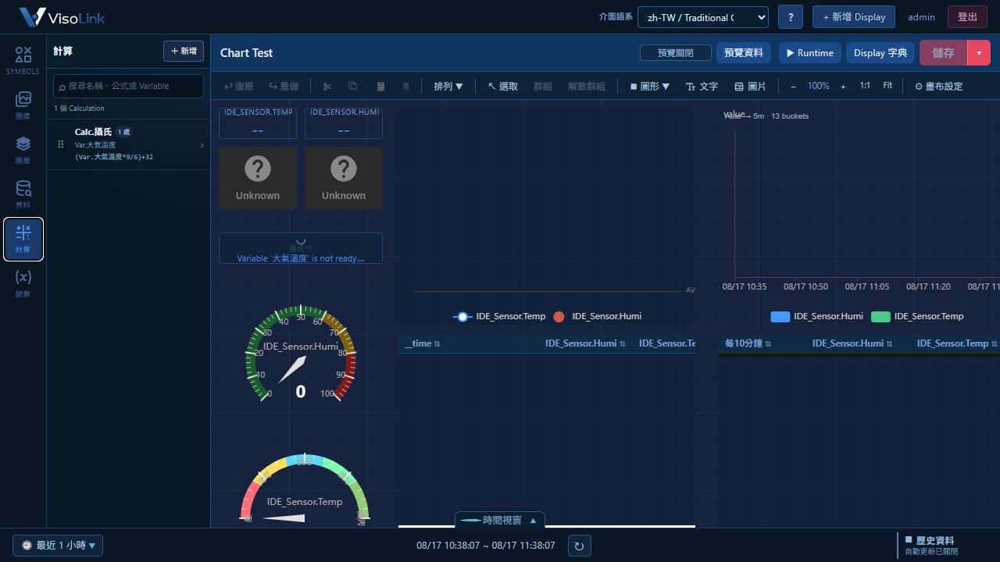
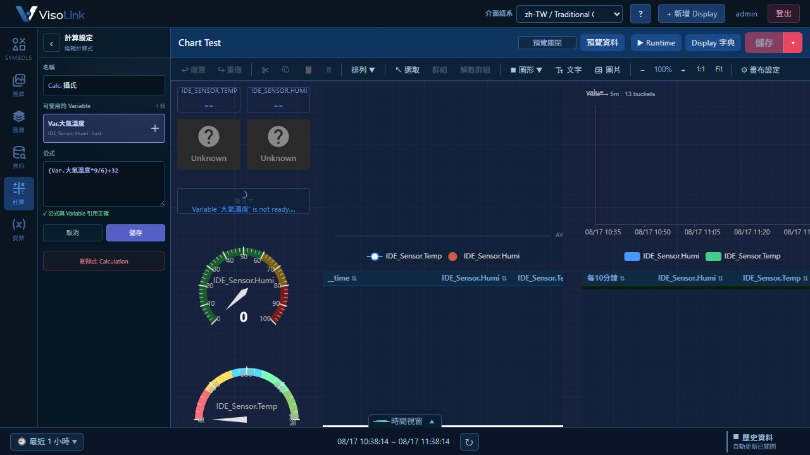

COURSE 04 · ADVANCED DESIGN
Calculation
& Variables
把原始資料轉成可重用、可驗證的 KPI 與畫面狀態。
進階 Studio 設計人員建議 120 分鐘先備：Course 03
LEARNING OUTCOMES
公式算得出來，只是最低要求
01建立 Variable
從 Binding、Field 與 TimeWindow 取得可重用數值。
02建立 Calculation
組合 Variable，完成單位轉換、條件與 KPI。
03處理邊界
考慮空值、除零、不同時間與過期資料。
04證明正確
以已知輸入、預期結果及 Runtime 情境驗證。
TWO RESPONSIBILITIES
先取值，再計算
Variable 回答
「這個 Field 在目前時間窗，要取最後值、平均、最小、最大、第一筆或總和？」
Calculation 回答
「這些可用數值要如何轉換、比較或組合成新的業務資訊？」
VARIABLE LIST
Variable 清單呈現來源、Field、Function 與引用狀況

Variable 名稱以 Var. 為前綴，並顯示 DataBinding、Field、Function 及引用次數。- 搜尋 Variable、DataBinding 或 Field
- 使用能表達業務意義的名稱
- 確認引用次數，避免修改後影響未知 Symbol
- 發現相同取值邏輯時優先重用
- 刪除前確認 Calculation 與 Symbol 依賴
VARIABLE EDITOR
一個 Variable 由四個決定構成

選擇 DataBinding、Field 與 Function，系統會顯示 Variable 表達式。- 名稱表達用途與單位，不只複製 Field 名稱。
- DataBinding選擇正確設備或資料集合。
- Field確認型別、單位與時間資料。
- Function依目前 TimeWindow 取得代表值。
AGGREGATION
Function 不是格式選項，而是資料意義
Last / First
最後或第一筆有效值。適合觀察區間起點、終點與目前附近狀態。
Min / Max
區間極值。適合尋找峰值、最低點與是否超過門檻。
Avg
區間平均。適合連續量測的典型水準，但可能掩蓋短暫尖峰。
Sum
區間總和。只適用可加總的資料，需確認來源值是否已是累積量。
TimeWindow
所有 Function 都受目前時間窗影響；換時間範圍就可能得到不同結果。
有效值
確認 Function 對空值、缺值及無效記錄的處理方式。
MEANING BEFORE MATH
同一段資料，使用不同 Function 會回答不同問題
Last = 72區間結束附近是多少？
First = 48區間開始時是多少？
Max = 96最高曾到多少？
Min = 42最低曾到多少？
Avg = 65平均水準是多少？
Sum是否真的具有可加總意義？
範例：設備溫度通常適合 Avg、Min、Max；把每筆溫度相加通常沒有清楚的業務意義。
CALCULATION LIST
Calculation 集中管理公式與 Variable 依賴

清單顯示 Calculation 名稱、引用次數、使用的 Variable 與公式摘要。- 以 Calc. 前綴與 Variable 清楚區隔
- 搜尋名稱、公式或 Variable
- 查看引用次數再評估修改影響
- 讓相同 KPI 使用同一 Calculation
- 錯誤狀態先確認 Variable 是否 ready
CALCULATION EDITOR
使用可用 Variable 組成公式

編輯器提供 Variable 選取、公式輸入與引用驗證。- 命名描述結果的業務意義與必要單位。
- 加入 Variable從可用清單加入，避免手動拼錯引用名稱。
- 撰寫公式使用括號明確表達運算順序。
- 通過驗證語法與引用正確後，仍需驗證計算意義。
FORMULA PATTERNS
先寫出業務定義，再翻成公式
差值
實際值 − 基準值
說明偏離多少。
比例
實際值 ÷ 基準值
比較相對大小。
達成率
實際值 ÷ 目標值 × 100
目標值不可為零。
單位轉換
依正式換算關係轉換，名稱與 Symbol 必須同步顯示新單位。
公式文件化：記錄名稱、目的、輸入 Variable、單位、TimeWindow、邊界規則、預期範圍與負責人。
TIME ALIGNMENT
跨來源可以計算，不代表可以直接比較
更新頻率
一個來源每秒更新，另一個每十分鐘更新；Last 可能代表不同時刻。
時間範圍
Variable Function 都由目前 TimeWindow 決定，必須使用相同分析情境。
缺值與延遲
來源中斷或延遲時，舊值可能仍存在；需定義何時視為過期。
建立跨來源 KPI 前，必須先定義「可以接受的最大時間差」與「任一輸入無效時的結果」。
DERIVED KPI
好的 KPI 能讓使用者採取行動
1問題要做什麼判斷？
2輸入哪些 Field 與單位？
3時間哪個 TimeWindow／Function？
4公式計算與邊界規則
5呈現數值、Gauge、狀態或 Trend
不要只給數字
提供單位、目標、門檻或比較基準。
不要隱藏定義
相同名稱在不同 Display 應使用相同公式。
APPLY TO SYMBOL
Calculation 可以驅動不同的畫面表達
數值
顯示精確 KPI、單位與小數位。
Gauge
呈現目前結果相對於目標或門檻的位置。
狀態與規則
依區間改變文字、顏色或圖示；不可只靠顏色。
Trend
確認 Calculation 是否具有可隨時間繪製的資料結果。
一致性：同一 KPI 套用到多個 Symbol 時，格式、單位、門檻與空值規則必須一致。
EDGE CASES
在正式畫面出錯前，先設計例外結果
除以零
基準為 0 時不可直接產生無限大；應顯示無法計算。
空值
任一必要輸入缺少時，定義結果為空值、保留或停止計算。
極端與負值
確認是否合理，避免圖表比例或狀態規則失真。
過期資料
數值存在但更新時間過久時，不應呈現為正常即時結果。
例外結果應讓監看人員知道「資料不可用」，而不是看見一個看似正常但錯誤的 KPI。
TEST WITH EVIDENCE
使用已知輸入建立可重複的測試案例
正常案例使用典型輸入驗證主要公式。
邊界案例門檻剛好等於、略高與略低。
空值案例任一或全部輸入不存在。
零值案例分母、目標或基準為零。
時間案例切換 TimeWindow 後結果符合定義。
權限案例來源不可讀時安全呈現。
驗證紀錄輸入值、時間範圍、預期結果、實際結果、是否通過及測試人員。
TROUBLESHOOTING
Calculation 不可用時，從上游逐層檢查
1Field有資料且型別正確？
2TimeWindow範圍內有有效值？
3VariableBinding／Function 正確？
4引用名稱存在且 ready？
5公式語法、括號與除零？
6Symbol模式與 Calculation 正確？
不要：看到「Variable is not ready」就反覆修改公式。先回到 Variable 的資料與 TimeWindow 狀態確認。
HANDS-ON ASSESSMENT
Course 04 實作任務
建立 KPI
- 從兩個指定 Field 建立 Variable
- 選擇 Function 並說明 TimeWindow 意義
- 建立衍生 KPI Calculation
- 記錄公式、單位與邊界規則
呈現與驗證
- 套用至數值、Gauge 與三段狀態
- 準備正常、邊界、空值及零值案例
- 切換時間範圍驗證結果
- 依除錯流程處理一個錯誤引用
通過標準公式定義可解釋、結果可重現、例外狀態不誤導，且所有 Symbol 使用一致的單位與門檻。
管理路徑：DataSource Management →